MERIDIUS / THE AMBERFELD COMPANY / 23 OCTOBER 2026
Iron, cloth and the weight of a kingdom.
Sculpted iron borders. Carved brass corners. Deep blue campaign banners. A new painted interface set, implemented throughout the Godot game.
The frontier artwork in the Higgsfield gallery and the supplied battlefield and Footmen references guide the materials and colour. The bright forest sunrise remains. Decoration is abstract: no heraldic symbol has been added.
24 October continuation check. The painted assets, slice renderer and saved themes still match this delivery. The screenshots below are the 23 October captures; later title-menu, battle HUD and playthrough changes have not been recaptured here.
The focused audio check currently reports 16 passed, 2 failed: the known battlefield outline compiler error and a volume-preferences test with JSON read errors. The second failure is not yet diagnosed. Shader ownership is being checked before any edit. Current audit and failure details.
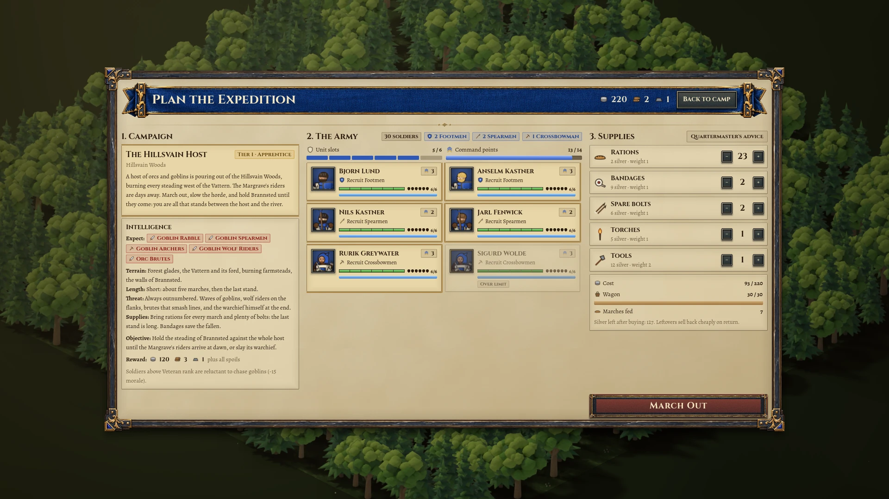
Three original masters, one visual language
Dark iron, aged brass, charred oak, lapis-blue cloth and warm vellum. Generous carved corners distinguish major panels; compact controls retain thin, readable edges.
Council border
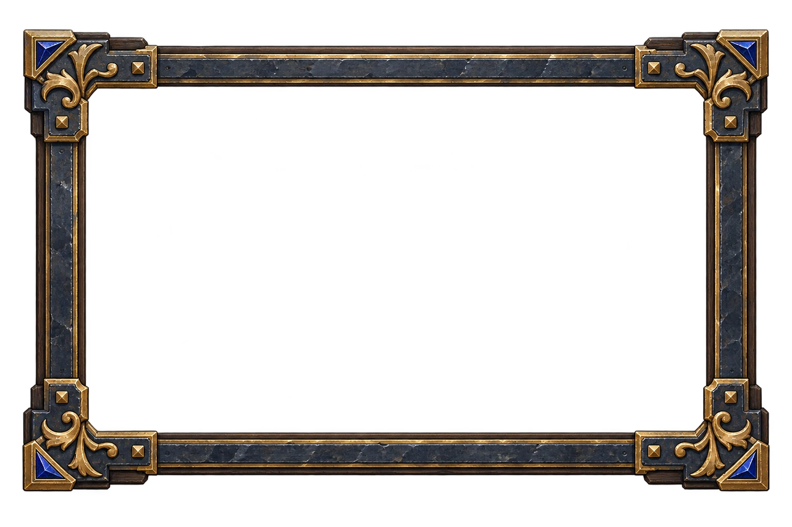
Company banner
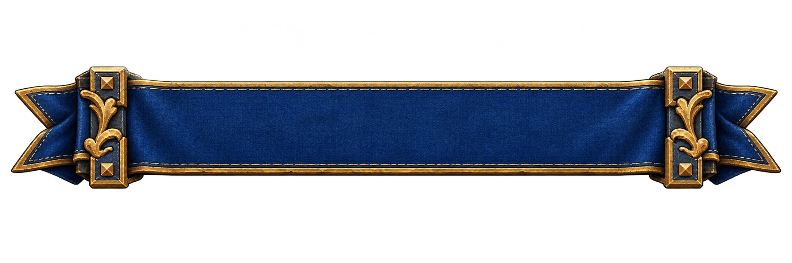
Command panel
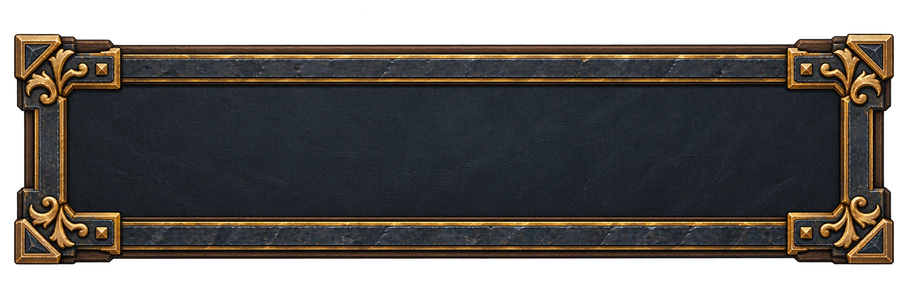
Created with ImageGen using the local style references and the first frame as the common material reference. Higgsfield was consulted visually; no Higgsfield generation was submitted. The original PNGs are preserved byte-for-byte. Art direction, generation briefs and slice map.
In the game
Tent Lines
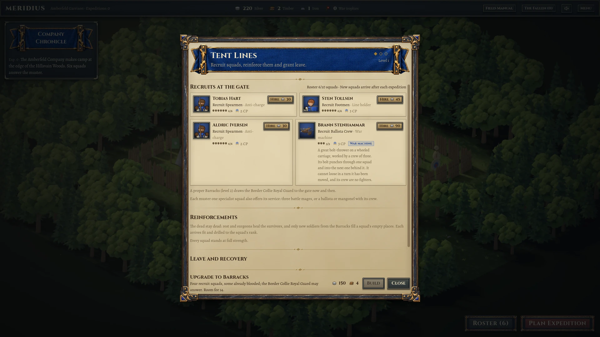
The company roster
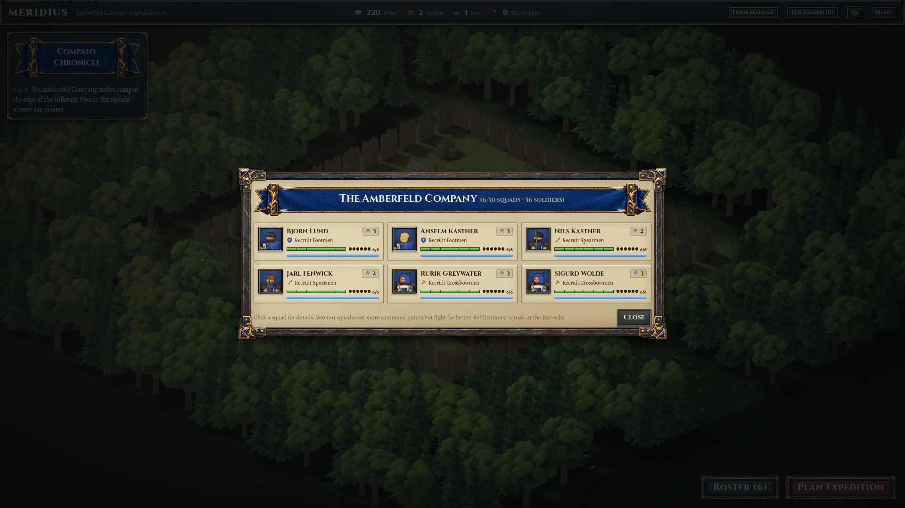
Deployment banner
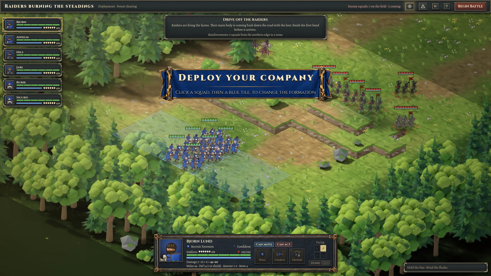
Pause and settings
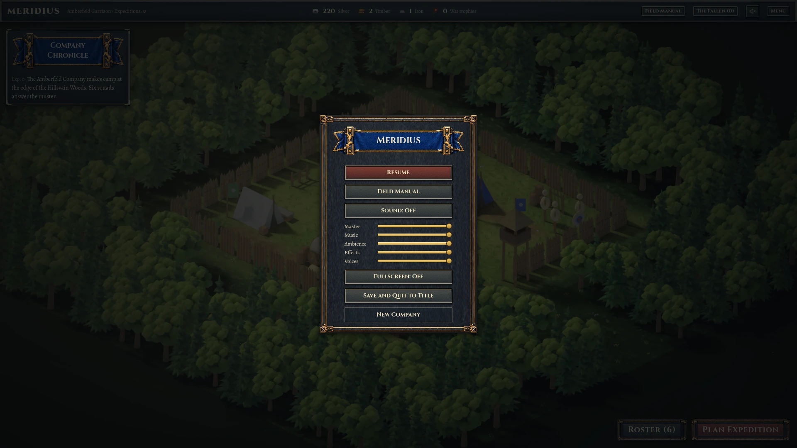
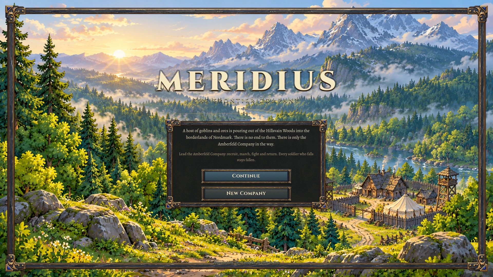
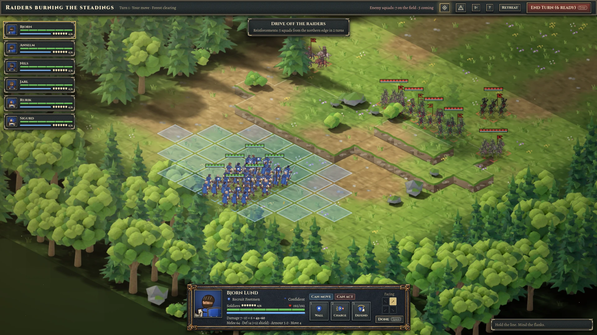
Before this refinement


Preserved first-pass report. Comparisons use the same seed and scenarios; animated world details can differ.
Desktop proportions
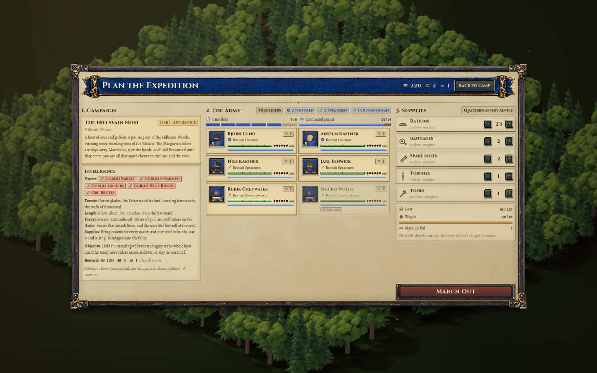
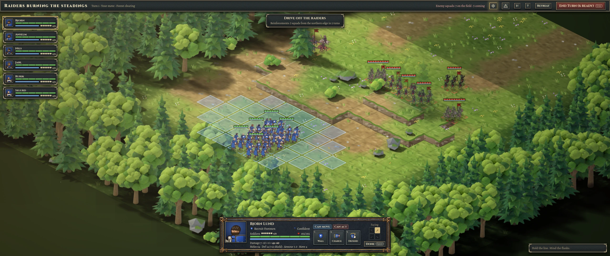
23 October verification and editable sources
31 native captures; 0 rendering/runtime errors. Twenty-three scenarios at 1920 × 1080, plus title, roster, preparation and live battle at 1440 × 900 and 2560 × 1080. Capture log.
235 input checks passed; 0 failures, errors or warnings. Recruitment, settings, army and supplies, campaign navigation, deployment, movement, attacks, abilities, undo, end turn, one complete battle, retreat, report and minimap. The expedition took 126 seconds. Playthrough log.
Quick suite: 363 passed, 1 failed, 10 skipped. All UI tests passed. The failure is a shader-compiler error while the audio test loads the battlefield; a focused rerun reproduced it (17 passed, 1 failed). The battlefield outline shader was being changed separately and was left intact. Recorded final test output.
Report reviewed at 1440 and 1024 pixels wide in light and dark themes, with no horizontal overflow. Image preview, 100% zoom and close were checked. Local image and source links were validated. The download click was attempted, but browser automation timed out before its saved-file receipt could be confirmed.
Source checksums and runtime mapping · Editable asset notes · Border PNG · Banner PNG · Panel PNG


Game screenshots are native Godot framebuffer captures. Generated artwork is separate from live labels and game state. Reviewed on the uncommitted godot-migration working tree; unrelated terrain, audio, squad and ability work is preserved. Input timing is recorded, but this is not a controlled performance comparison. No Windows export was produced. Final aesthetic acceptance remains with the user.